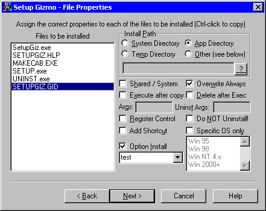
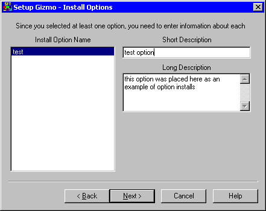

|
Most frequently you will not need to have optionally installed components. However, there are times when you might want to give the user the option of installing a particular component. Larger SETUP applications often accomplish this somewhat rare need by providing a plethora of dialog box templates and inconvenient 'requires programming' solutions. S.F.T. Setup Gizmo makes it simple: If you want to install something optionally during SETUP, the user gets prompted with a Yes/No/Cancel box and a description of the option.
To begin with, if you want to make a component optional, go to the 'File Properties' page (right), select the optional file in the list box labeled "Files to be Installed", and check the 'Option Install' checkbox. The combo box beneath it becomes enabled, and you can type in the 'internal name' you want to use to identify this option (it must be unique for the current SETUP). Once assigned, this value is also placed in the listbox associated with this combo box, so you can easily select it for any other files you might want to include in this option. |
 |
|  | If you assign any options, pressing the 'Next' button displays the "Install Options" screen. From here, you can assign a 'short description' and a 'long description' to each of the options. The 'short description' appears at the top of the Yes/No/Cancel dialog when the user runs SETUP, and the long description just below it. Typically, a short description might be "The Test Database" and the long description might be "Install the test database if you want to be able to play with the application without damaging your live data." You can try experimenting with this a little, running an occasional SETUP to see what the results look like. Just don't forget to save the SETUP configuration before you create the disk image. |
Sometimes, you might need to install files on SOME operating systems and not on others. For example, you might have a driver file that works on Windows '95 and Windows '98, and a different driver file for Windows NT 4.0, and an even different one for Windows NT 5.0 (which is still in beta at the time of this writing). What's worse is that in all 3 cases the file name is the same. So, to avoid confusion, create a sub-directory off of the 'source path' for your application files, one for each of the operating systems (or groups of them). Then, include the file as you normally would (which preserves the path name, making it 'unique' within the cabinet file). Now, for each of these files, check the 'specific OS only' checkbox, and highlight the operating systems you want to install it for. You can select one or all of entries in the listbox (it's an extended selection listbox). Selecting none of them acts the same as not checking the 'specific OS only' checkbox, installing the file on all operating systems.
As a side note, you can install an option so that it only affects a single operating system. For example, if you're installing on Windows NT you might include a special application or DLL that gives you access to some NT-specific features, one that is optionally installed ONLY on an NT system. The user will not be prompted for the option if it would not be installed on his system (in this case, Windows '95 or Windows '98).
A 'worst case' scenario might be the inclusion of a separate setup program and associated cabinet files to install something like MS Internet Explorer 4.0 on Win '95 and Win NT 4.0 systems so that your application can take advantage of features that Internet Explorer has to offer. Internet Explorer has 10 '.cab' files and one EXE file that's self-extracting. Each of these '.cab' files must be extracted from your setup into a temporary directory, then run when SETUP completes. All this happens ONLY if the user selects to install it, and ONLY if he's running either Win '95 or Win NT 4.0 and it's not already installed.
To accomplish this, you'd need to create a special 'temporary' program that would check for the existence of Internet Explorer 4.0, and run the SETUP for it if it's not installed. This program should wait for the original SETUP application to complete before it begins its work to avoid conflicts, and be able to handle all 'reboot' conditions (in case shared components must be updated). Though it may be beyond the capabilities of the S.F.T. Setup Gizmo to easily create such a monstrosity, you can see that it is at least possible.